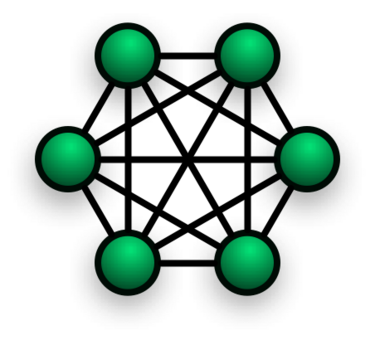
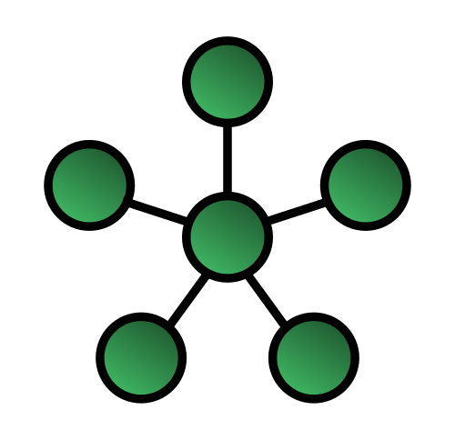
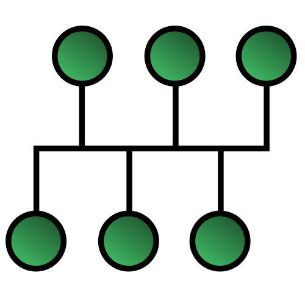
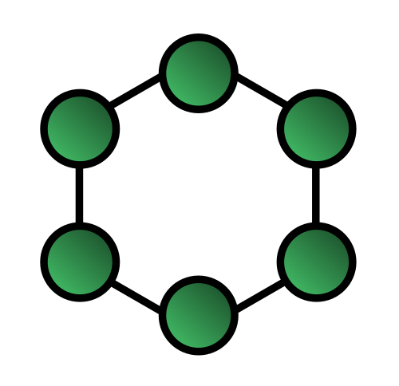
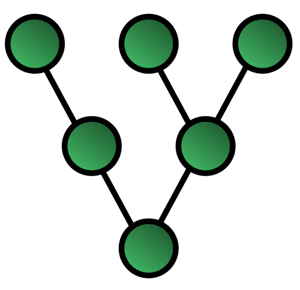

Network Topology & Its Types
Ashmita Pandey · · Networking

Hi everyone, I’m Ashmita 👋
Today, let’s explore one of the foundational concepts in computer networking: Network Topology. Understanding how devices are arranged and connected within a network is key to building efficient and scalable systems. Let's dive in.
What is Network Topology?
Network topology refers to the structure or layout of a network. It defines how devices (nodes) are physically or logically arranged and how data flows within the system.
There are two main types of network topology:
- Physical Topology: The actual physical layout of devices and cables.
- Logical Topology: The way data flows within the network regardless of physical design.
Both are important when planning or analyzing a network setup.
Types of Network Topology
Let’s now explore the most common types of network topology:
1. Point-to-Point Topology This is the simplest topology where two devices are directly connected. One device sends, and the other receives.
- Simple and fast communication
- Common in Bluetooth and direct connections
2. Mesh Topology In this topology, every device is connected to every other device.
- Highly reliable and fault-tolerant
- Complex and costly to set up due to many connections
- Used in internet backbones and secure systems

3. Star Topology All devices connect to a central hub. Each node communicates via the hub.
- Easy to manage and expand
- If the hub fails, the network goes down
- Common in LANs and office setups

4. Bus Topology Devices share a single communication line (backbone). Each node taps into this line.
- Simple and cost-effective for small networks
- Collisions and signal issues with more devices
- Seen in small setups and legacy networks

5. Ring Topology Devices form a closed loop. Data moves in one or both directions depending on the setup.
- Token passing reduces collisions
- Failure of a single node can impact the entire network
- Used in FDDI and some office environments

6. Tree Topology A combination of star topologies connected in a hierarchy.
- Scalable and structured
- Dependent on the main hub/root
- Used in large organizations and campuses

7. Hybrid Topology A mix of two or more topologies tailored to specific needs.
- Flexible and scalable
- Expensive and complex to manage
- Common in universities and enterprises
Why is Network Topology Important?
Choosing the right topology influences:
- Performance: Efficient data flow reduces delays
- Reliability: Redundancy in topologies like mesh increases fault tolerance
- Scalability: Easy to add new devices in tree or hybrid structures
- Security: Structured layout allows better monitoring and control
Conclusion
Network topology is more than just the physical connection of wires. It defines how your systems communicate, how reliable they are, and how easy they are to scale. Whether you're designing a small office network or a large campus infrastructure, choosing the right topology makes a huge difference in performance and stability.
Hope this helped you get a clear understanding of different network topologies and their use cases!